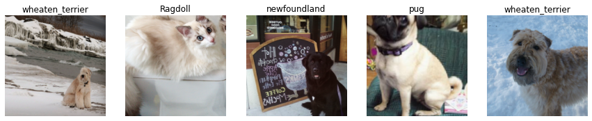
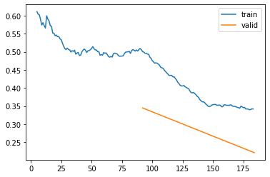
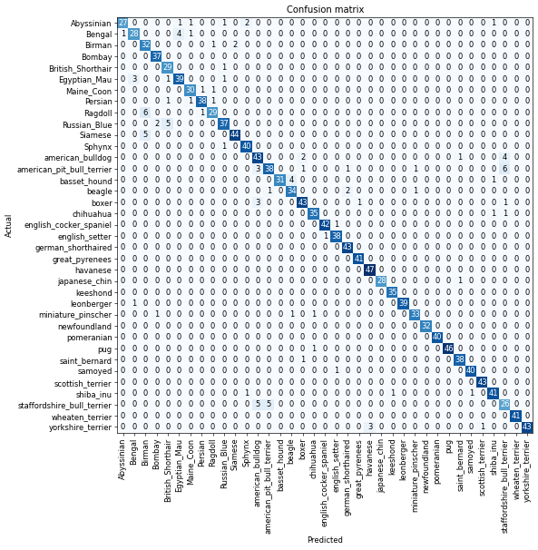
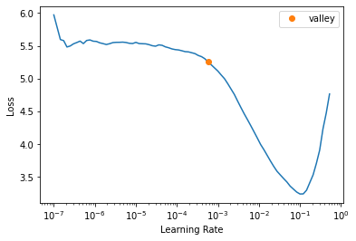
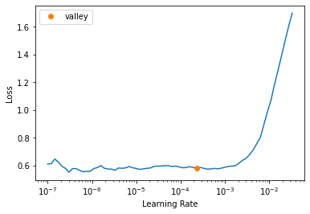
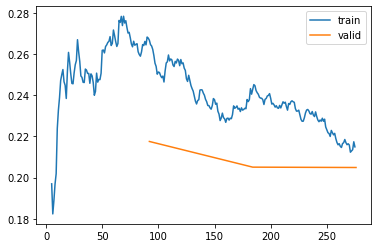

from fastai.vision.all import *
device = 'gpu'Pet Breed Classification
Multi-class classification using FastAI
Credits: Practical Deep Learning for Coders book by Jeremy Howard and Sylvain Gugger.
Data
Let’s first download the data:
Running on Quadro P5000 16GB.
Data Preparation
path = untar_data(URLs.PETS)
100.00% [811712512/811706944 00:09<00:00]
path.ls()(#2) [Path('/root/.fastai/data/oxford-iiit-pet/images'),Path('/root/.fastai/data/oxford-iiit-pet/annotations')](path/'images').ls()(#7393) [Path('/root/.fastai/data/oxford-iiit-pet/images/american_bulldog_56.jpg'),Path('/root/.fastai/data/oxford-iiit-pet/images/Siamese_61.jpg'),Path('/root/.fastai/data/oxford-iiit-pet/images/english_cocker_spaniel_66.jpg'),Path('/root/.fastai/data/oxford-iiit-pet/images/shiba_inu_55.jpg'),Path('/root/.fastai/data/oxford-iiit-pet/images/scottish_terrier_68.jpg'),Path('/root/.fastai/data/oxford-iiit-pet/images/Abyssinian_153.jpg'),Path('/root/.fastai/data/oxford-iiit-pet/images/Ragdoll_57.jpg'),Path('/root/.fastai/data/oxford-iiit-pet/images/pug_182.jpg'),Path('/root/.fastai/data/oxford-iiit-pet/images/Siamese_182.jpg'),Path('/root/.fastai/data/oxford-iiit-pet/images/newfoundland_100.jpg')...]fname = (path/'images').ls()[0]
fnamePath('/root/.fastai/data/oxford-iiit-pet/images/american_bulldog_56.jpg')If we want to extract the breed itself from the name we can use regex:
m = re.match(r"(.+)_\d+.jpg", fname.name)
breed = m.group(1)
breed'american_bulldog'item_tfms is applied to all images. Here it resizes images to some large value first.
batch_tfms is applied only on mini-batches (on GPU if set as device). Here it crops and scales images. Note that validation set does not get augmented, only gets resized.
pets = DataBlock(blocks= (ImageBlock, CategoryBlock),
get_items=get_image_files,
splitter=RandomSplitter(seed=42),
get_y=using_attr(RegexLabeller(r"(.+)_\d+.jpg$"), 'name'),
item_tfms=Resize(460),
batch_tfms=aug_transforms(size=224, min_scale=0.75))pets.summary(path/'images')Setting-up type transforms pipelines
Collecting items from /root/.fastai/data/oxford-iiit-pet/images
Found 7390 items
2 datasets of sizes 5912,1478
Setting up Pipeline: PILBase.create
Setting up Pipeline: partial -> Categorize -- {'vocab': None, 'sort': True, 'add_na': False}
Building one sample
Pipeline: PILBase.create
starting from
/root/.fastai/data/oxford-iiit-pet/images/pug_130.jpg
applying PILBase.create gives
PILImage mode=RGB size=300x225
Pipeline: partial -> Categorize -- {'vocab': None, 'sort': True, 'add_na': False}
starting from
/root/.fastai/data/oxford-iiit-pet/images/pug_130.jpg
applying partial gives
pug
applying Categorize -- {'vocab': None, 'sort': True, 'add_na': False} gives
TensorCategory(29)
Final sample: (PILImage mode=RGB size=300x225, TensorCategory(29))
Collecting items from /root/.fastai/data/oxford-iiit-pet/images
Found 7390 items
2 datasets of sizes 5912,1478
Setting up Pipeline: PILBase.create
Setting up Pipeline: partial -> Categorize -- {'vocab': None, 'sort': True, 'add_na': False}
Setting up after_item: Pipeline: Resize -- {'size': (460, 460), 'method': 'crop', 'pad_mode': 'reflection', 'resamples': (<Resampling.BILINEAR: 2>, <Resampling.NEAREST: 0>), 'p': 1.0} -> ToTensor
Setting up before_batch: Pipeline:
Setting up after_batch: Pipeline: IntToFloatTensor -- {'div': 255.0, 'div_mask': 1} -> Flip -- {'size': None, 'mode': 'bilinear', 'pad_mode': 'reflection', 'mode_mask': 'nearest', 'align_corners': True, 'p': 0.5} -> RandomResizedCropGPU -- {'size': (224, 224), 'min_scale': 0.75, 'ratio': (1, 1), 'mode': 'bilinear', 'valid_scale': 1.0, 'max_scale': 1.0, 'mode_mask': 'nearest', 'p': 1.0} -> Brightness -- {'max_lighting': 0.2, 'p': 1.0, 'draw': None, 'batch': False}
Building one batch
Applying item_tfms to the first sample:
Pipeline: Resize -- {'size': (460, 460), 'method': 'crop', 'pad_mode': 'reflection', 'resamples': (<Resampling.BILINEAR: 2>, <Resampling.NEAREST: 0>), 'p': 1.0} -> ToTensor
starting from
(PILImage mode=RGB size=300x225, TensorCategory(29))
applying Resize -- {'size': (460, 460), 'method': 'crop', 'pad_mode': 'reflection', 'resamples': (<Resampling.BILINEAR: 2>, <Resampling.NEAREST: 0>), 'p': 1.0} gives
(PILImage mode=RGB size=460x460, TensorCategory(29))
applying ToTensor gives
(TensorImage of size 3x460x460, TensorCategory(29))
Adding the next 3 samples
No before_batch transform to apply
Collating items in a batch
Applying batch_tfms to the batch built
Pipeline: IntToFloatTensor -- {'div': 255.0, 'div_mask': 1} -> Flip -- {'size': None, 'mode': 'bilinear', 'pad_mode': 'reflection', 'mode_mask': 'nearest', 'align_corners': True, 'p': 0.5} -> RandomResizedCropGPU -- {'size': (224, 224), 'min_scale': 0.75, 'ratio': (1, 1), 'mode': 'bilinear', 'valid_scale': 1.0, 'max_scale': 1.0, 'mode_mask': 'nearest', 'p': 1.0} -> Brightness -- {'max_lighting': 0.2, 'p': 1.0, 'draw': None, 'batch': False}
starting from
(TensorImage of size 4x3x460x460, TensorCategory([29, 7, 14, 25], device='cuda:0'))
applying IntToFloatTensor -- {'div': 255.0, 'div_mask': 1} gives
(TensorImage of size 4x3x460x460, TensorCategory([29, 7, 14, 25], device='cuda:0'))
applying Flip -- {'size': None, 'mode': 'bilinear', 'pad_mode': 'reflection', 'mode_mask': 'nearest', 'align_corners': True, 'p': 0.5} gives
(TensorImage of size 4x3x460x460, TensorCategory([29, 7, 14, 25], device='cuda:0'))
applying RandomResizedCropGPU -- {'size': (224, 224), 'min_scale': 0.75, 'ratio': (1, 1), 'mode': 'bilinear', 'valid_scale': 1.0, 'max_scale': 1.0, 'mode_mask': 'nearest', 'p': 1.0} gives
(TensorImage of size 4x3x224x224, TensorCategory([29, 7, 14, 25], device='cuda:0'))
applying Brightness -- {'max_lighting': 0.2, 'p': 1.0, 'draw': None, 'batch': False} gives
(TensorImage of size 4x3x224x224, TensorCategory([29, 7, 14, 25], device='cuda:0'))dls = pets.dataloaders(path/"images")dls.show_batch(nrows=1, ncols=5)
Let’s create learner, and define dataloaders, model, and metrics (optimizer and loss are deducted automatically).
Training
learner = vision_learner(dls, resnet34, metrics=error_rate)
learner.fine_tune(2)| epoch | train_loss | valid_loss | error_rate | time |
|---|---|---|---|---|
| 0 | 0.505711 | 0.344845 | 0.109608 | 00:35 |
| 1 | 0.342231 | 0.221326 | 0.073072 | 00:34 |
learner.recorder.plot_loss()
We can definitely train more using fine_tune but the error rate seem small so let’s take a look at some predictions:
x, y = dls.one_batch()yTensorCategory([ 1, 13, 30, 25, 28, 32, 24, 1, 17, 28, 21, 16, 11, 3, 36, 25,
34, 30, 13, 21, 15, 24, 0, 9, 0, 27, 31, 2, 18, 25, 4, 14,
27, 35, 19, 33, 21, 34, 2, 4, 31, 30, 19, 0, 36, 30, 31, 35,
14, 12, 18, 7, 8, 31, 15, 20, 16, 13, 29, 1, 16, 9, 32, 10],
device='cuda:0')preds, class_preds = learner.get_preds(dl=[(x, y)])print(preds.shape)
print(preds)
class_predstorch.Size([64, 37])
TensorBase([[1.2718e-02, 7.3877e-01, 1.2443e-05, ..., 1.4487e-05,
2.1402e-05, 2.4068e-06],
[2.1086e-04, 3.4171e-05, 2.3038e-05, ..., 1.0070e-01,
3.7866e-04, 1.8155e-05],
[2.2906e-07, 6.6254e-08, 2.3534e-07, ..., 1.0171e-07,
2.4211e-07, 3.6889e-07],
...,
[2.1525e-06, 7.6821e-08, 2.3279e-08, ..., 1.8256e-07,
1.4531e-08, 5.4367e-10],
[4.5686e-10, 1.6017e-08, 2.5129e-09, ..., 7.3533e-09,
1.6970e-05, 1.6900e-07],
[1.7999e-08, 7.1642e-11, 2.4699e-06, ..., 2.8352e-10,
1.9007e-09, 1.4708e-09]])tensor([ 1, 13, 30, 25, 28, 32, 24, 1, 17, 28, 21, 16, 11, 3, 36, 25, 34, 30,
13, 21, 15, 24, 0, 9, 0, 27, 31, 2, 18, 25, 4, 14, 27, 35, 19, 33,
21, 34, 2, 4, 31, 30, 19, 0, 36, 30, 31, 35, 14, 12, 18, 7, 8, 31,
15, 20, 16, 13, 29, 1, 16, 9, 32, 10])There are 64 samples in a batch, each having a probability of a certain class. The class_preds is just argmax of preds:
preds.argmax(dim=1)TensorBase([ 1, 13, 30, 25, 28, 32, 24, 1, 17, 28, 21, 16, 11, 3, 36, 25, 34,
30, 13, 21, 15, 24, 0, 9, 1, 27, 31, 2, 18, 25, 4, 14, 27, 35,
19, 33, 21, 34, 2, 4, 31, 30, 19, 0, 36, 30, 31, 35, 14, 12, 19,
7, 8, 31, 15, 20, 16, 13, 29, 1, 16, 9, 32, 10])So learner deducted this is a multi-category problem, and have decided on nn.CrossEntropyLoss (which is combo of nn.LogSoftmax and nn.NLLLoss). What’s important is to apply nn.CrossEntropyLoss on logits, not on probabilites, so our model should not have softmax layer at the end.
Softmax is a multi-category equivalent of sigmoid. We use it any time when we want to convert logits into probabilites, and we want them to sum up to 1.
Log is important because it’s easier to optimize, since difference between, say, 0.99 and 0.999 is 10 fold, not negligible.
Model interpretation
interp = ClassificationInterpretation.from_learner(learner)interp.plot_confusion_matrix(figsize=(10,10), dpi=60)
interp.most_confused(min_val=3)[('Ragdoll', 'Birman', 6),
('american_pit_bull_terrier', 'staffordshire_bull_terrier', 6),
('Russian_Blue', 'British_Shorthair', 5),
('Siamese', 'Birman', 5),
('staffordshire_bull_terrier', 'american_bulldog', 5),
('staffordshire_bull_terrier', 'american_pit_bull_terrier', 5),
('Bengal', 'Egyptian_Mau', 4),
('american_bulldog', 'staffordshire_bull_terrier', 4),
('basset_hound', 'beagle', 4),
('Egyptian_Mau', 'Bengal', 3),
('american_pit_bull_terrier', 'american_bulldog', 3),
('boxer', 'american_bulldog', 3),
('yorkshire_terrier', 'havanese', 3)]Learning rate finder
Let’s train with some large learning rate (run it for 1 epoch every time with base_lr):
learner = vision_learner(dls, resnet18, metrics=error_rate)
learner.fine_tune(1, base_lr=0.1)| epoch | train_loss | valid_loss | error_rate | time |
|---|---|---|---|---|
| 0 | 2.900633 | 1.380544 | 0.409337 | 00:25 |
learner.fine_tune(1, base_lr=0.1)| epoch | train_loss | valid_loss | error_rate | time |
|---|---|---|---|---|
| 0 | 2.599579 | 1.268538 | 0.391746 | 00:26 |
learner.fine_tune(1, base_lr=0.2)| epoch | train_loss | valid_loss | error_rate | time |
|---|---|---|---|---|
| 0 | 5.310261 | 4.817607 | 0.616373 | 00:25 |
So clearly we are diverging. We can use learning rate finder to deduct the good learning rate:
learner = vision_learner(dls, resnet18, metrics=error_rate)
lr_min = learner.lr_find()
print(f'{lr_min.valley:.2e}')5.75e-04Transfer learning
The idea here is the same as before, we replace the last layer, freeze all but that last layer, then train. A version of this is done with the following:
learner.fine_tune??Signature:
learner.fine_tune(
epochs,
base_lr=0.002,
freeze_epochs=1,
lr_mult=100,
pct_start=0.3,
div=5.0,
*,
lr_max=None,
div_final=100000.0,
wd=None,
moms=None,
cbs=None,
reset_opt=False,
start_epoch=0,
)
Source:
@patch
@delegates(Learner.fit_one_cycle)
def fine_tune(self:Learner, epochs, base_lr=2e-3, freeze_epochs=1, lr_mult=100,
pct_start=0.3, div=5.0, **kwargs):
"Fine tune with `Learner.freeze` for `freeze_epochs`, then with `Learner.unfreeze` for `epochs`, using discriminative LR."
self.freeze()
self.fit_one_cycle(freeze_epochs, slice(base_lr), pct_start=0.99, **kwargs)
base_lr /= 2
self.unfreeze()
self.fit_one_cycle(epochs, slice(base_lr/lr_mult, base_lr), pct_start=pct_start, div=div, **kwargs)
File: /usr/local/lib/python3.9/dist-packages/fastai/callback/schedule.py
Type: methodWhere learner.freeze will freeze up to a last layer:
learner.freeze??Signature: learner.freeze()
Docstring: Freeze up to last parameter group
Source:
@patch
def freeze(self:Learner): self.freeze_to(-1)
File: /usr/local/lib/python3.9/dist-packages/fastai/learner.py
Type: methodlearner.fit_one_cycle trains whatever is unfrozen with some scheduler (will study it later):
learner.fit_one_cycle??Signature:
learner.fit_one_cycle(
n_epoch,
lr_max=None,
div=25.0,
div_final=100000.0,
pct_start=0.25,
wd=None,
moms=None,
cbs=None,
reset_opt=False,
start_epoch=0,
)
Source:
@patch
def fit_one_cycle(self:Learner, n_epoch, lr_max=None, div=25., div_final=1e5, pct_start=0.25, wd=None,
moms=None, cbs=None, reset_opt=False, start_epoch=0):
"Fit `self.model` for `n_epoch` using the 1cycle policy."
if self.opt is None: self.create_opt()
self.opt.set_hyper('lr', self.lr if lr_max is None else lr_max)
lr_max = np.array([h['lr'] for h in self.opt.hypers])
scheds = {'lr': combined_cos(pct_start, lr_max/div, lr_max, lr_max/div_final),
'mom': combined_cos(pct_start, *(self.moms if moms is None else moms))}
self.fit(n_epoch, cbs=ParamScheduler(scheds)+L(cbs), reset_opt=reset_opt, wd=wd, start_epoch=start_epoch)
File: /usr/local/lib/python3.9/dist-packages/fastai/callback/schedule.py
Type: methodlearner = vision_learner(dls, resnet18, metrics=error_rate)
learner.fit_one_cycle(3, 5e-4)| epoch | train_loss | valid_loss | error_rate | time |
|---|---|---|---|---|
| 0 | 2.346319 | 0.579111 | 0.176590 | 00:22 |
| 1 | 1.001505 | 0.389489 | 0.131258 | 00:21 |
| 2 | 0.690984 | 0.360593 | 0.121786 | 00:22 |
learner.unfreeze()learner.lr_find()SuggestedLRs(valley=0.0002290867705596611)
Loss is flat for small LRs because we already trained for 3 epochs.
Discriminative learning rates
Let’s try to train with different learning rates for different layers. We can do it by passing a list (via slice) of learning rates to fit_one_cycle so early layers will have smaller learning rate (these layers learn about major edges) vs later layers (which learn about more specific details faster):
learner = vision_learner(dls, resnet34, metrics=error_rate)
learner.fit_one_cycle(3, 3e-3)| epoch | train_loss | valid_loss | error_rate | time |
|---|---|---|---|---|
| 0 | 1.165250 | 0.328640 | 0.099459 | 00:28 |
| 1 | 0.543935 | 0.273579 | 0.094046 | 00:28 |
| 2 | 0.338364 | 0.218583 | 0.070365 | 00:28 |
learner.unfreeze()
learner.fit_one_cycle(3, slice(1e-6, 1e-4))| epoch | train_loss | valid_loss | error_rate | time |
|---|---|---|---|---|
| 0 | 0.267663 | 0.217494 | 0.071719 | 00:34 |
| 1 | 0.240454 | 0.205031 | 0.072395 | 00:34 |
| 2 | 0.214869 | 0.204856 | 0.069012 | 00:35 |
So validation loss got better overall, error_rate flattened.
learner.recorder.plot_loss()
Half-precision training
We’ll speed up training by using half-precision training. We can do it by passing `to_fp16’:
from fastai.callback.fp16 import *
learner = vision_learner(dls, resnet18, metrics=error_rate).to_fp16()
learner.fine_tune(6, freeze_epochs=3)| epoch | train_loss | valid_loss | error_rate | time |
|---|---|---|---|---|
| 0 | 0.374304 | 0.270750 | 0.094046 | 00:27 |
| 1 | 0.378627 | 0.319606 | 0.105548 | 00:27 |
| 2 | 0.292685 | 0.285336 | 0.093369 | 00:27 |
| 3 | 0.203631 | 0.263839 | 0.088633 | 00:27 |
| 4 | 0.145154 | 0.263045 | 0.087280 | 00:27 |
| 5 | 0.119077 | 0.252303 | 0.084574 | 00:27 |
This was resnet18, let’s try resnet50:
from fastai.callback.fp16 import *
learner = vision_learner(dls, resnet50, metrics=error_rate).to_fp16()
learner.fine_tune(6, freeze_epochs=3)| epoch | train_loss | valid_loss | error_rate | time |
|---|---|---|---|---|
| 0 | 0.267938 | 0.229196 | 0.073072 | 00:58 |
| 1 | 0.314602 | 0.392396 | 0.100812 | 00:58 |
| 2 | 0.252791 | 0.325749 | 0.098106 | 00:58 |
| 3 | 0.168045 | 0.223274 | 0.065629 | 00:59 |
| 4 | 0.093663 | 0.190344 | 0.056834 | 00:58 |
| 5 | 0.059073 | 0.192047 | 0.056834 | 00:58 |
Clearly an improvement!